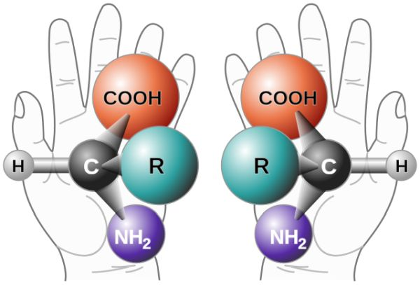

viewof bill_length_min = Inputs.range(
[32, 50],
{value: 35, step: 1, label: "Bill length (min):"}
)
viewof islands = Inputs.checkbox(
["Torgersen", "Biscoe", "Dream"],
{ value: ["Torgersen", "Biscoe"],
label: "Islands:"
}
)
sales = [
{units: 10, fruit: "peach"},
{units: 20, fruit: "pear"},
{units: 40, fruit: "plum"},
{units: 30, fruit: "plum"}
]
Plot.plot({
marks: [
Plot.barX(sales, {x: "units", y: "fruit", fill: "fruit"}),
Plot.ruleX([0])
]
})01 Introduction
Module 1 description

1. General Concepts in Organic Chemistry
Chemistry is the study of matter and the changes it undergoes.
Matter is anything that occupies space and has mass.
Test Observable JS
Copyright
Copyright(C) 2022 Yu Wang

This work is licensed under a Creative Commons Attribution 4.0 International License.